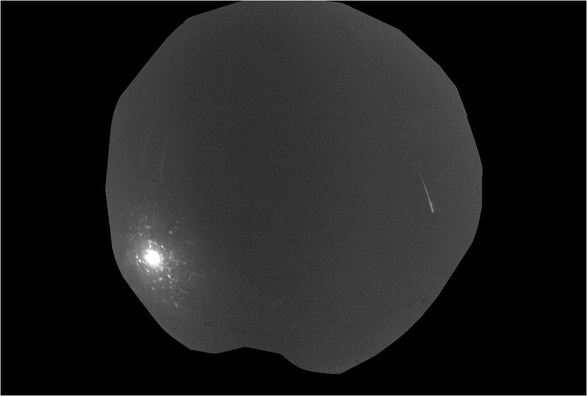
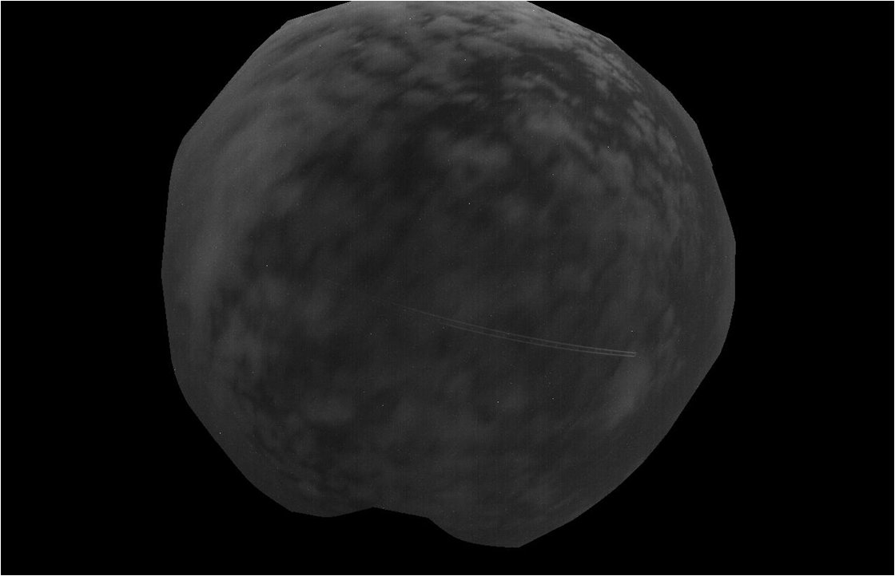
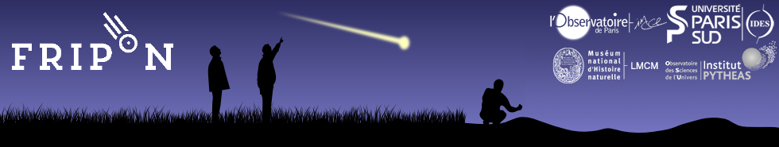

FreeTure is a meteor detection software used to monitor the sky with GigE all-sky cameras to detect and record falling stars and fireball. Originally, it has been developped for the FRIPON (Fireball Recovery and InterPlanetary Observation Network) project (www.fripon.org) which aims to cover all France with 100 fish eyes cameras. But you can use it on your own station if you have a GigE camera. For now, just this kind of camera is supported but you can easily add the support of your own camera.
Please refer to the wiki on github for futher informations about the installation. Once the soft has been installed, you can do a copy of the configuration file located by default in /usr/share/freeture/ for linux to start to configurate some parameters. After that you can start to use the soft by the following commands. There are four mains available modes.
The first mode lists detected cameras. The returned name must be write in the configuration file in order to use the third mode or write in the command line for the second mode.
$ freeture -m 1
The second mode is used to quickly see the parameters of the configuration file.
$ freeture -m 2
The third mode run the detection. The option -c is not usefull if the command is run in the same directory.
$ freeture -m 3 -c [path_of_the_configuration_file] -t [execution_time]
The fourth mode makes a single capture to test the camera.
$ freeture -m 4 -d [device_name] -g [gain] -e [exposure_time]
The following fireball has been detected the 06 october 2014 at 22h58m38s UT.
Plane events are usually not recorded because they are during too long time compared to meteors. Adjusting soome parameters can enable the soft to record them, like the following examples.
Having trouble with FreeTure ? Check out the wiki at https://github.com/fripon/freeture/wiki or contact us at https://github.com/fripon/freeture/issues and we’ll help you sort it out .
